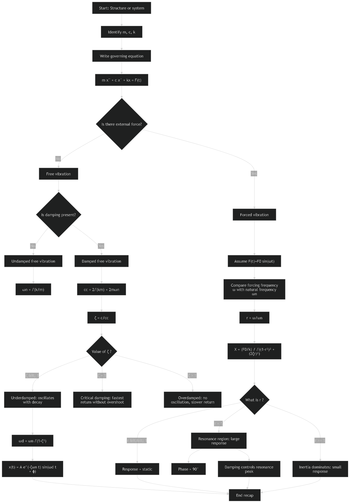
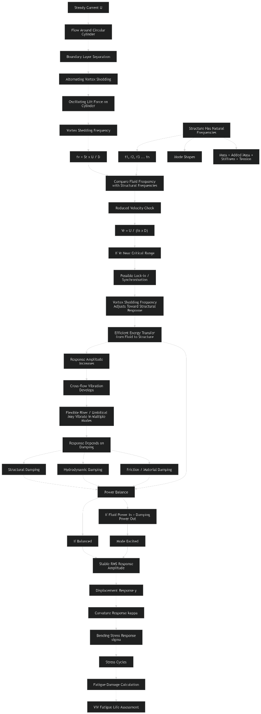

This is the compact theory map tying the Navier–Stokes foundation to the four-stage SHEAR7 engineering workflow used throughout the VIV website.
Click a box for purpose, inputs, outputs and checks. The page follows the terminology and boundaries of the supplied study modules.
Navier–Stokes + structural dynamics + moving boundary
Separation → vortices → alternating lift
Mass + stiffness + tension + supports → modes
Modes + empirical hydro coefficients + power balance
f_n, Y_n(x), Y_n″(x)
Shed → Match → Map → Rank
Mass → Lift → Loss → Loop → Modes
RMS response, stress, fatigue, drag amplification
Physically traceable response → stress → fatigue metrics

